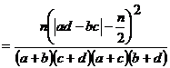
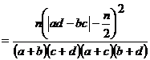

STAM101 :: Lecture 11 :: Attributes

Contingency table – 2x2 contingency table – Test for independence of attributes – test for goodness of fit of mendalian ratio
Test based on  -distribution
-distribution
In case of attributes we can not employ the parametric tests such as F and t. Instead we have to apply  test. When we want to test whether a set of observed values are in agreement with those expected on the basis of some theories or hypothesis. The
test. When we want to test whether a set of observed values are in agreement with those expected on the basis of some theories or hypothesis. The  statistic provides a measure of agreement between such observed and expected frequencies.
statistic provides a measure of agreement between such observed and expected frequencies.
Chi-Square
The  test has a number of applications. It is used to
test has a number of applications. It is used to
- Test the independence of attributes
- Test the goodness of fit
- Test the homogeneity of variances
- Test the homogeneity of correlation coefficients
- Test the equaslity of several proportions.
In genetics it is applied to detect linkage.
Applications
 – test for goodness of fit
– test for goodness of fit
A very powerful test for testing the significance of the discrepancy between theory and experiment was given by Prof. Karl Pearson in 1900 and is known as “chi-square test of goodness of fit “.
If 0i, (i=1,2,…..,n) is a set of observed (experimental frequencies) and Ei (i=1,2,…..,n) is the corresponding set of expected (theoretical or hypothetical) frequencies, then,

It follows a  distribution with n-1 d.f. In case of
distribution with n-1 d.f. In case of  only one tailed test is used.
only one tailed test is used.
Example
In plant genetics, our interest may be to test whether the observed segregation ratios deviate significantly from the mendelian ratios. In such situations we want to test the agreement between the observed and theoretical frequency, such test is called as test of goodness of fit.
Conditions for the validity of  -test:
-test:
 -test is an approximate test for large values of ‘n’ for the validity of
-test is an approximate test for large values of ‘n’ for the validity of  -test of goodness of fit between theory and experiment, the following conditions must be satisfied.
-test of goodness of fit between theory and experiment, the following conditions must be satisfied.
- The sample observations should be independent.
2. Constraints on the cell freqrequency, if any, should be linear.
Example:=.
3. N, the total frequency should be reasonably large, say greater then (>) 50.
4. No theoretical cell frequency should be less than (<)5. If any theoretical cell frequency is <5, then for the application of  - test, it is pooled with the preceding or scecceeding frequency so that the pooled frequency is more than 5 and finally adjust for degree’s of freedom lost in pooling.
- test, it is pooled with the preceding or scecceeding frequency so that the pooled frequency is more than 5 and finally adjust for degree’s of freedom lost in pooling.
Example1
The number of yiest cells counted in a haemocytometer is compared to the theoretical value is given below. Does the experimental result support the theory?
No. of Yeast cells in the square |
Obseved Frequency |
Expected Frequency |
0 |
103 |
106 |
1 |
143 |
141 |
2 |
98 |
93 |
3 |
42 |
41 |
4 |
8 |
14 |
5 |
6 |
5 |
Solution
H0: the experimental results support the theory
H1: the esperimental results does not support the theory.
Level of significance=5%
Test Statistic:
Oi |
Ei |
Oi-Ei |
(Oi-Ei)2 |
(Oi-Ei)2/Ei |
103 |
106 |
-3 |
9 |
0.0849 |
143 |
141 |
2 |
4 |
0.0284 |
98 |
93 |
5 |
25 |
0.2688 |
42 |
41 |
1 |
1 |
0.0244 |
8 |
14 |
-6 |
36 |
2.5714 |
6 |
5 |
1 |
1 |
0.2000 |
400 |
400 |
|
|
3.1779 |
\ =3.1779
=3.1779
Table value
 (6-1=5 at 5 % l.os)= 11.070
(6-1=5 at 5 % l.os)= 11.070
Inference
 <
< tab
tab
We accept the null hypothesis.
(i.e) there is a good correspondence between theory and experiment.
 test for independence of attributes
test for independence of attributes
At times we may consider two charactertistics on attributes simultaneously. Our interest will be to test the association between these two attributes
Example:- An entomologist may be interested to know the effectiveness of different concentrations of the chemical in killing the insects. The concentrations of chemical form one attribute. The state of insects ‘killed & not killed’ forms another attribute. The result of this experiment can be arranged in the form of a contingency table. In general one attribute may be divided into m classes as A 1,A 2, …….A m and the other attribute may be divided into n classes as B 1,B 2, ……B n . Then the contingency table will have m x n cells. It is termed as m x n contingency table
A B |
A1 |
A2 |
… |
Aj |
… |
Am |
Row Total |
B1 |
O11 |
O12 |
… |
O1j |
|
O1m |
r1 |
B2 |
O21 |
O22 |
… |
O2j |
|
O2m |
r2 |
. |
|
|
|
|
|
|
|
Bi |
Oij |
Oi2 |
… |
Oij |
|
Oim |
ri |
. |
|
|
|
|
|
|
|
Bn |
On1 |
On2 |
… |
Onj |
|
Onm |
rk |
Column Total |
c1 |
c2 |
… |
cj |
… |
cm |
n= |
where Oij’s are observed frequencies.
The expected frequencies corresponding to Oij is calculated as . The  is computed as
is computed as

where
Oij – observed frequencies
Eij – Expected frequencies
n= number of rows
m= number of columns
It can be verified that
This  is distributed as
is distributed as  with (n-1) (m-1) d.f.
with (n-1) (m-1) d.f.
2x2 – contingency table
When the number of rows and numberof columns are equal to 2 it is termed as 2 x 2 contingency table .It will be in the following form
|
B1 B2 |
Row Total |
A1 A2 |
a b c d |
a+b r1 c+d r2 |
Column |
a+c b+d c1 c2 |
a+b+c+d |
Where a, b, c and d are cell frequancies c1 and c2 are column totals, r1 and r2 are row totals and n is the total number of observations.
In case of 2 x 2 contigency table  can be directly found using the short cut formula,
can be directly found using the short cut formula,

The d.f associated with  is (2-1) (2-1) =1
is (2-1) (2-1) =1
Yates correction for continuity
If anyone of the cell frequency is < 5, we use Yates correction to make  as continuous. The yares correction is made by adding 0.5 to the least cell frequency and adjusting the other cell frequencies so that the column and row totals remain same . suppose, the firat cell frequency is to be corrected then the consigency table will be as follows:
as continuous. The yares correction is made by adding 0.5 to the least cell frequency and adjusting the other cell frequencies so that the column and row totals remain same . suppose, the firat cell frequency is to be corrected then the consigency table will be as follows:
|
B1 |
B2 |
Row Total |
A1 A2 |
a |
b |
a+b=r1 |
c |
d |
c+d =r2 |
|
Column |
a+c=c1 |
b+d=c2 |
n = a+b+c+d |
Then use the  - statistic as
- statistic as

The d.f associated with  is (2-1) (2-1) =1
is (2-1) (2-1) =1
Exapmle 2
The severity of a disease and blood group were studied in a research projest. The findings sre given in the following table, knowmn as the m xn contingency table. Can this severity of the condition and blood group are associated.
Severity of a disease classified by blood group in 1500 patients.
Condition |
Blood Groups |
Total |
|||
O |
A |
B |
AB |
||
Severe |
51 |
40 |
10 |
9 |
110 |
Moderate |
105 |
103 |
25 |
17 |
250 |
Mild |
384 |
527 |
125 |
104 |
1140 |
Total |
540 |
670 |
160 |
130 |
1500 |
Solution
H0: The severity of the disease is not associated with blood group.
H1: The severity of the disease is associated with blood group.
Calculation of Expected frequencies
Condition |
Blood Groups |
Total |
|||
O |
A |
B |
AB |
||
Severe |
39.6 |
49.1 |
11.7 |
9.5 |
110 |
Moderate |
90.0 |
111.7 |
26.7 |
21.7 |
250 |
Mild |
410.4 |
509.2 |
121.6 |
98.8 |
1140 |
Total |
540 |
670 |
160 |
130 |
1500 |
Test statistic:


The d.f. associated with the  is (3-1)(4-1) = 6
is (3-1)(4-1) = 6
Calculations
Oi |
Ei |
Oi-Ei |
(Oi-Ei)2 |
(Oi-Ei)2/Ei |
51 |
39.6 |
11.4 |
129.96 |
3.2818 |
40 |
49.1 |
-9.1 |
82.81 |
1.6866 |
10 |
11.7 |
-1.7 |
2.89 |
0.2470 |
9 |
9.5 |
-0.5 |
0.25 |
0.0263 |
105 |
90.0 |
15 |
225.00 |
2.5000 |
103 |
111.7 |
-8.7 |
75.69 |
0.6776 |
25 |
26.7 |
-1.7 |
2.89 |
0.1082 |
17 |
21.7 |
-4.7 |
22.09 |
1.0180 |
384 |
410.4 |
-26.4 |
696.96 |
1.6982 |
527 |
509.2 |
17.8 |
316.84 |
0.6222 |
125 |
121.6 |
3.4 |
11.56 |
0.0951 |
104 |
98.8 |
5.2 |
27.04 |
0.2737 |
Total |
12.2347 |
|||
\ =12.2347
=12.2347
Table value of  for 6 d.f. at 5% level of significance is 12.59
for 6 d.f. at 5% level of significance is 12.59
Inference
 <
< tab
tab
We accept the null hypothesis.
The severity of the disease has no association with blood group.
Example 3
In order to determine the possible effect of a chemical treatment on the rate of germination of cotton seeds a pot culture experiment was conducted. The results are given below
Chemical treatment and germination of cotton seeds
|
Germinated |
Not germinated |
Total |
Chemically Treated |
118 |
22 |
140 |
Untreated |
120 |
40 |
160 |
Total |
238 |
62 |
300 |
Does the chemical treatrment improve the germination rate of cotton seeds?
Solution
H0:The chemical treatment does not improve the germination rate of cotton seeds.
H1: The chemical treatment improves the germination rate of cotton seeds.
Level of significance = 1%
Test statistic

Table value
 (1) d.f. at 1 % L.O.S = 6.635
(1) d.f. at 1 % L.O.S = 6.635
Inference
 <
< tab
tab
We accept the null hypothesis.
The chemical treatmentwill not improve the germination rate of cotton seeds significantly.
Example 4
In an experiment on the effect of a growth regulator on fruit setting in muskmelon the following results were obtained. Test whether the fruit setting in muskmelon and the application of growth regulator are independent at 1% level.
|
Fruit set |
Fruit not set |
Total |
Treated |
16 |
9 |
25 |
Control |
4 |
21 |
25 |
Total |
20 |
30 |
50 |
Solution
H0:Fruit setting in muskmelon does not depend on the application of growth regulator.
H1: Fruit setting in muskmelon depend on the application of growth regulator.
Level of significance = 1%
After Yates correction we have
|
Fruit set |
Fruit not set |
Total |
Treated |
15.5 |
9.5 |
25 |
Control |
4.5 |
20.5 |
25 |
Total |
20 |
30 |
50 |
Tet statistic
 

Table value
 (1) d.f. at 1 % level of significance is 6.635
(1) d.f. at 1 % level of significance is 6.635
Inference
 >
> tab
tab
We reject the null hypothesis.
Fruit setting in muskmelon is influenced by the growth regulator. Application of growth regulator will increase fruit setting in musk melon.
| Download this lecture as PDF here |